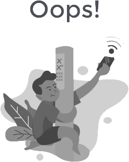

<div class="my-5 pt-sm-5">
  <div class="container ">
    <div class="row justify-content-center">
      <div class="col-md-8 col-lg-6 col-xl-5 ">
        <div class="text-center mb-4">
          <a routerlink="/" class="auth-logo mb-5 d-block" href="/">
            
            
            
          </a>
          <i class="web_lunnachat_login_logo"></i>
          
          <h4>Lunna Chat</h4>
        </div>
        <div class="container-login100">
          <div class="card-body p-3  ">
            <div class="">
              <div class="p-3 login_box">
                <div class="divlogo mb-4"> 
                  <i class="web_lunnachat_login_logo"></i>
                   
                </div>
                <div class="qrcode" *ngIf="!isBrokenNetwork" ng-class="{hide: isScan || isBrokenNetwork}">
                  <qrcode [qrdata]="qrcode_data" [width]="300" [errorCorrectionLevel]="'M'" [elementType]="'svg'">
                  </qrcode>
                  <div ng-show="!isNeedRefresh" class="ng-hide">
                    <p class="sub_title">Scan to log in to LunnaChat</p>
                    <!-- ngIf: showPrivacyTips -->
                    <p class="sub_desc ng-scope" ng-if="showPrivacyTips">
                      <span>Tip: Web LunnaChat requires the use browser cookies to help you log in to allow the web
                        application to
                        function.</span>
                      <br>
                      <a [routerLink]="['/policy']" class="font-weight-medium text-primary" target="_blank">More
                        Information</a>

                    </p><!-- end ngIf: showPrivacyTips -->
                    <!-- ngIf: !showPrivacyTips -->
                  </div>
                  <div *ngIf="isNeedRefresh" class="ng-show">
                    <div class="qrcode_expired"> </div>
                    <div class="refresh_qrcode_mask">
                      <i class="icon-refresh" ng-class="{rotateLoading: isRotateLoading}" (click)="refreshQrcode()"></i>
                    </div>
                    <p class="refresh_tips">QR Code expired,Click Refresh</p>

                  </div>
                </div>


                <div class="broken_network show" *ngIf="isBrokenNetwork" ng-class="{show: isBrokenNetwork}">
                  <div class="icon-broken-logo">
                    
                  </div>

                  <h4 class="sub_title">Network unavailable</h4>
                  <p class="sub_desc">Please check your network configuration <span (click)="refreshQrcode()"
                      class="reconnect" ng-class="{show: isClientVersion}">{{version}}</span></p>
                </div>


                <div class="mt-5 text-center">
                  <p class="m-t">
                    <a [routerLink]="['/chat']" class="font-weight-medium text-primary">Chat Screen</a><br>
                    <small>Lunna &copy; {{myyear}}</small>
                  </p>
                </div>
              </div>
            </div>
          </div>
        </div>
      </div>
    </div>
  </div>
</div>
